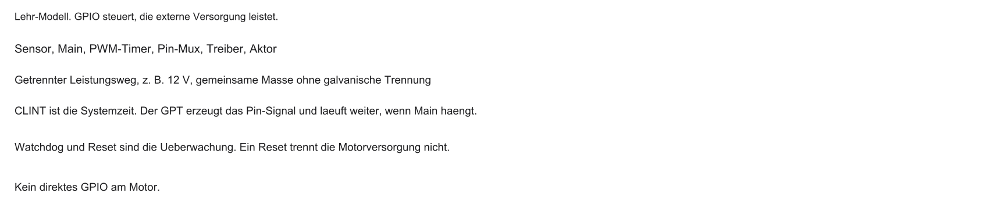
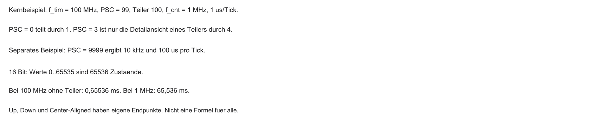
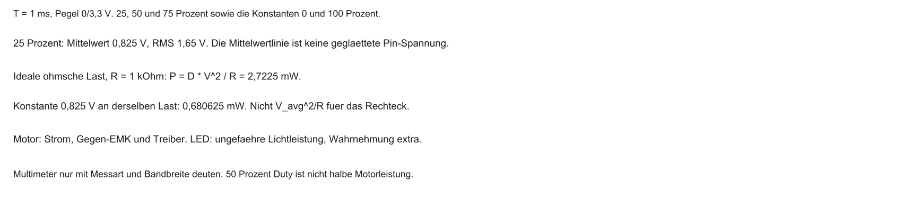
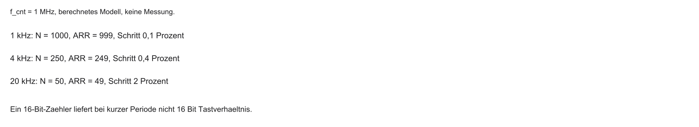
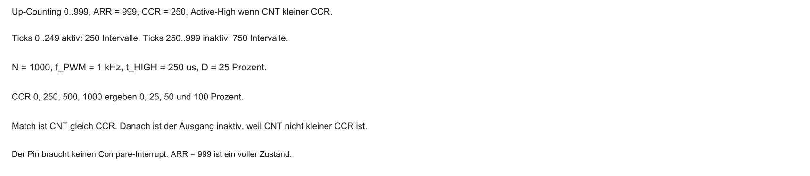
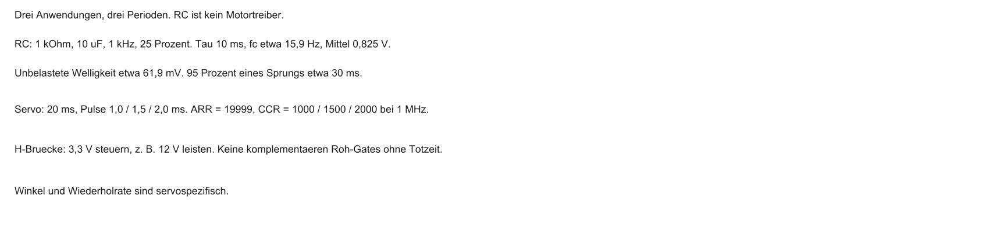

%%{init: {'theme': 'base', 'themeVariables': {'background': '#FFFFFF', 'primaryColor': '#FFFFFF', 'primaryBorderColor': '#E5E5EA', 'primaryTextColor': '#1D1D1F', 'lineColor': '#86868B', 'secondaryColor': '#F5F5F7', 'tertiaryColor': '#FFFFFF', 'mainBkg': '#FFFFFF', 'nodeBorder': '#E5E5EA', 'clusterBkg': '#F5F5F7', 'clusterBorder': '#E5E5EA', 'titleColor': '#1D1D1F', 'edgeLabelBackground': '#FFFFFF'}}}%%
flowchart LR
A[Block 3: Interrupts] -->|CPU reagiert| B[Block 4: Aktorik]
B -->|CPU steuert| C[LEDs und Motoren]
D[Watchdog] -.->|Hardware schützt| B
style B fill:#FFFFFF,stroke:#E2001A,stroke-width:2px !important
04 · Aktorik & Sicherheit
Mikrocomputertechnik 3 · Von Hardware-Countern, PWM-Signalen und dem rettenden Watchdog
Prof. Dr.-Ing. Daniel Klünder
Willkommen zu Block 4!
- Willkommen zur vierten Vorlesung in Mikrocomputertechnik 3
- Rückblick: In Block 3 hat der CLINT dem SoC einen Herzschlag (System-Tick) gegeben
- Bisher: CPU reagiert auf Ereignisse (Interrupts) und verarbeitet Daten
- Heute: das System wird aktiv — physikalische Welt steuern (Aktorik)
- Sicherheitsnetz: Wer passt auf die CPU auf, wenn Software hängt?
Einordnung im Semester
Anknüpfung: CLINT, Tick und volatile
Kurz-Recap aus Block 3 (Vertiefung im Übungsblatt):
- System-Tick: CLINT-Timer periodisch (typisch 1 ms)
- Foreground-ISR und Background-
main()teilen die CPU-Zeit - Geteilte Variablen:
volatilegegen Compiler-Optimierung - PLIC: Prioritäten und Ordnung bei externen Ereignissen
- Dieser Takt ist Grundlage für die Signalerzeugung heute
Von der Zeitmessung zur Weltsteuerung
- EVA-Prinzip: Eingabe, Verarbeitung, Ausgabe
- Bisheriger Fokus: RAM (Verarbeitung) und Interrupts (Eingabe)
- Fehlender Teil: Eingriff in die physikalische Welt
- Aktorik: Steuern mechanischer/physikalischer Bauteile (Motoren, Heizungen, Leuchtmittel)
- Ziel: Größen wie Geschwindigkeit oder Helligkeit stufenlos regeln
EVA — Schema

%%{init: {'theme': 'base', 'themeVariables': {'background': '#FFFFFF', 'primaryColor': '#FFFFFF', 'primaryBorderColor': '#E5E5EA', 'primaryTextColor': '#1D1D1F', 'lineColor': '#86868B', 'secondaryColor': '#F5F5F7', 'tertiaryColor': '#FFFFFF', 'mainBkg': '#FFFFFF', 'nodeBorder': '#E5E5EA', 'clusterBkg': '#F5F5F7', 'clusterBorder': '#E5E5EA', 'titleColor': '#1D1D1F', 'edgeLabelBackground': '#FFFFFF'}}}%%
flowchart LR
E[Eingabe: Sensor] --> V[Verarbeitung: SoC]
V --> A[Ausgabe: Aktorik]
A --> M[Motor / LED]
style A fill:#FFFFFF,stroke:#E2001A,stroke-width:2px !important
Das Problem der digitalen Welt
- Die CPU lebt in einer binären Welt
- GPIO-Pin: typisch nur HIGH (z. B. \(3{,}3\,\mathrm{V}\)) oder LOW (\(0\,\mathrm{V}\))
- Dilemma: der Pin kennt nur zwei Pegel. Helligkeit und Kraft folgen nicht linear aus einem Zwischenwert.
- Viele MCU-Pins haben keinen stufenlosen Analogausgang (DAC)
- Lösungsidee: Trägheit der realen Welt ausnutzen
Das Problem der Software-Fehler
- Zuverlässigkeit: Was, wenn der Code in
while (1);hängt? - Folgen: System reagiert nicht; Aktoren können unkontrolliert weiterlaufen
- In sicherheitskritischen Domänen (Medizin, Avionik, Industrie) inakzeptabel
- Bedarf: Hardware, die die CPU überwacht und im Notfall resetten kann
%%{init: {'theme': 'base', 'themeVariables': {'background': '#FFFFFF', 'primaryColor': '#FFFFFF', 'primaryBorderColor': '#E5E5EA', 'primaryTextColor': '#1D1D1F', 'lineColor': '#86868B', 'secondaryColor': '#F5F5F7', 'tertiaryColor': '#FFFFFF', 'mainBkg': '#FFFFFF', 'nodeBorder': '#E5E5EA', 'clusterBkg': '#F5F5F7', 'clusterBorder': '#E5E5EA', 'titleColor': '#1D1D1F', 'edgeLabelBackground': '#FFFFFF'}}}%%
flowchart TD
A[Normaler Betrieb] --> B{Software-Bug?}
B -->|ja| C[Freeze / Endlosschleife]
C --> D[Hardware muss eingreifen]
style D fill:#FFFFFF,stroke:#E2001A,stroke-width:2px !important
Agenda für den heutigen Tag
- Hardware-Counter und Timer-Architektur (warum der CLINT hier nicht reicht)
- Pulsweitenmodulation (PWM) — Illusion analoger Signale
- PWM-Erzeugung in Hardware (Compare-Register)
- System-Sicherheit und Watchdog Timer (WDT)
- Brückenschlag zum Labor (z. B. Renode und RGB-LEDs)
Lernziele Block 4
- Aufbau eines General Purpose Timers (GPT) inkl. Prescaler erklären
- Mathematik der PWM verstehen (Frequenz, Duty Cycle)
- Begründen, warum Software-PWM (Bit-Banging) die CPU belastet und Timing gefährdet
- Watchdog Timer (WDT) korrekt konfigurieren und „füttern“
- Typische Anfängerfehler beim WDT vermeiden
Die Leitfrage des Tages
- SoC-Pin: oft maximal \(3{,}3\,\mathrm{V}\) (100 %) oder \(0\,\mathrm{V}\) (0 %)
- Ziel im Beispiel: 50 Prozent Tastverhaeltnis. Das ist nicht allgemein halbe Motorleistung.
- Ohne externe Bauteile wie digitale Potentiometer
- Wie dimmt man auf 50 %, wenn der Pin nur „Vollgas“ oder „Aus“ kennt?
Leitfrage — Schema
%%{init: {'theme': 'base', 'themeVariables': {'background': '#FFFFFF', 'primaryColor': '#FFFFFF', 'primaryBorderColor': '#E5E5EA', 'primaryTextColor': '#1D1D1F', 'lineColor': '#86868B', 'secondaryColor': '#F5F5F7', 'tertiaryColor': '#FFFFFF', 'mainBkg': '#FFFFFF', 'nodeBorder': '#E5E5EA', 'clusterBkg': '#F5F5F7', 'clusterBorder': '#E5E5EA', 'titleColor': '#1D1D1F', 'edgeLabelBackground': '#FFFFFF'}}}%%
flowchart LR
H[3.3 V HIGH] -->|Trick?| M[Motor bei 50 %]
L[0 V LOW] -->|Trick?| M
style M fill:#FFFFFF,stroke:#E2001A,stroke-width:2px !important
CLINT vs. Peripherie-Timer
- Warum nicht einfach
mtimeaus Block 3 für Aktorik? - CLINT: 64-Bit-System-Timer — läuft durch, darf nicht „wild“ zurückgesetzt werden (OS-Zeitbasis)
- Aktorik braucht Timer, die periodisch bei 0 neu starten und mit Ausgangspins verbunden sind
- Lösung: General Purpose Timers (GPT) in der Peripherie — oft viele pro SoC
Der General Purpose Timer (GPT)
- Flexibles Zählwerk in Hardware, unabhängig vom RISC-V-Kern
- Aufgaben: externe Ereignisse zählen, Zeit stoppen, Pulsmuster auf Pins ausgeben
- Heute: programmierbarer Signalgenerator — nicht „System-Uhr“
- Konfiguration über Memory-Mapped Register (MMIO)
Anatomie eines Hardware-Counters
Drei Kernbausteine:
- Clock Source: oft Systemtakt (z. B. \(100\,\mathrm{MHz}\))
- Prescaler (PSC): Vorteiler, drosselt den Takt
- Counter-Register (CNT): Zählwert (typisch 16- oder 32-Bit)
Jeder Tick hinter dem Prescaler erhöht CNT um 1.
Counter-Kette — Schema

%%{init: {'theme': 'base', 'themeVariables': {'background': '#FFFFFF', 'primaryColor': '#FFFFFF', 'primaryBorderColor': '#E5E5EA', 'primaryTextColor': '#1D1D1F', 'lineColor': '#86868B', 'secondaryColor': '#F5F5F7', 'tertiaryColor': '#FFFFFF', 'mainBkg': '#FFFFFF', 'nodeBorder': '#E5E5EA', 'clusterBkg': '#F5F5F7', 'clusterBorder': '#E5E5EA', 'titleColor': '#1D1D1F', 'edgeLabelBackground': '#FFFFFF'}}}%%
flowchart LR
A[System Clock\n100 MHz] -->|Takt| B[Prescaler PSC]
B -->|verlangsamt| C[Counter CNT]
style B fill:#FFFFFF,stroke:#E2001A,stroke-width:2px !important
Der Prescaler (Vorteiler)
- Problem: \(100\,\mathrm{MHz}\) = \(10^{8}\) Ticks/s; 16-Bit-Max \(\approx 65\,535\) → Überlauf in unter 1 ms
- Lösung: Prescaler lässt nur jeden \(n\)-ten Takt durch
- Typisch: Registerwert \(PSC\), Teilung durch \(PSC + 1\) (weil 0 mitzählt)
- Beispiel: \(PSC = 99\) → Teiler 100 → langsameres Zählen, längere Messfenster
Mathematik: Zählfrequenz
\[ f_{\mathrm{cnt}} = \frac{f_{\mathrm{clock}}}{PSC + 1} \]
Beispiel: \(f_{\mathrm{clock}} = 100\,\mathrm{MHz}\), \(PSC = 9999\)
\[ f_{\mathrm{cnt}} = \frac{10^{8}}{10^{4}} = 10\,\mathrm{kHz} \]
→ Counter erhöht sich \(10\,000\)-mal pro Sekunde (alle \(0{,}1\,\mathrm{ms}\)).
Das Auto-Reload Register (ARR)
- Wo endet das Zählen? → Auto-Reload / Period Register (ARR)
- Absolute Obergrenze des Zählers
- Erreicht
CNTden Wert ARR, ist das noch ein voller Tick - Der nächste Zählschritt setzt auf 0. Die Periode ist ARR+1
- Im Kernmodell: PSC+1, Vergleich
CNT < CCR, Active-High
Zähl-Modus: Up-Counting
- Standard für viele GPT-Anwendungen
- Ablauf: 0 → hoch bis ARR → Reset auf 0
- Signalform: Sägezahn
- Einsatz: Zeitmessung, periodische Interrupts, einfache PWM
| Phase | CNT |
|---|---|
| Start | 0 |
| Mitte | steigt |
| Grenze | ARR |
| Danach | 0 (neu) |
Zähl-Modus: Down-Counting
- Umgekehrt: Start bei ARR, herunter bis 0
- Bei 0 oft Event/Interrupt; Neu laden mit ARR
- Signalform: fallender Sägezahn
- Einsatz: Timeouts; verwandt mit manchen SysTick-Konzepten (z. B. Cortex-M)
Zähl-Modus: Center-Aligned
- Fortgeschrittener Modus: 0 → ARR → wieder zurück nach 0 (Richtungsumkehr)
- Signalform: Dreieck
- Einsatz: moderne Motorsteuerung (z. B. FOC), Wechselrichter
| Phase | Verhalten |
|---|---|
| Aufwärts | 0 → ARR |
| Abwärts | ARR → 0 |
| Form | Dreieck |
Fragen? — Counter und GPT
- Rolle von Prescaler (PSC) und Auto-Reload (ARR) klar?
- Zählfrequenz \(f_{\mathrm{cnt}}\) berechnen können?
- Up-Counting vs. Center-Aligned unterschieden?
- Warum Datenblatt zu \(ARR\) vs. \(ARR+1\) prüfen?
Die analoge Illusion
- Zurück zur Leitfrage: 50 Prozent aktive Zeit an einem binären Pin?
- Trick: Pin sehr schnell ein- und ausschalten
- Beispiel: 1 kHz, je Hälfte der Periode HIGH/LOW
- Motor und Auge sind zu träge, um dem Stottern zu folgen
- Effekt: schnelles Schalten. Wahrnehmung und mechanische Wirkung sind davon zu trennen.
Was ist PWM?
- Pulsweitenmodulation (PWM, Pulse Width Modulation)
- Wichtige Schnittstelle: digitale Steuerung und Leistungselektronik
- Grundfrequenz bleibt konstant; die Pulsweite (HIGH-Anteil) wird moduliert
- Breiter Puls → viel Energie; schmaler Puls → wenig Energie
Periode und Frequenz
- Periode \(T\): Dauer eines Zyklus (HIGH + LOW)
- Frequenz \(f = 1/T\)
- Zu niedrige \(f\) (z. B. 10 Hz): sichtbares Flackern, ruckelige Motoren
- Richtwerte (Faustregeln): LEDs oft \(\gtrsim 200\,\mathrm{Hz}\); Motoren oft 10–20 kHz (weniger hörbares Fiepen)
| Abschnitt | Bedeutung |
|---|---|
| HIGH | Energie ein |
| LOW | Energie aus |
| \(T\) | ein voller Zyklus |
Der Duty Cycle (Tastverhältnis)
- Wichtigste PWM-Größe: Anteil der HIGH-Zeit an der Periode
\[ \mathrm{Duty\ Cycle} = \frac{t_{\mathrm{HIGH}}}{T} \]
- Anteil der aktiven Zeit im gewählten PWM-Modell
- Periode/Frequenz konstant; wir ändern den Duty Cycle
Duty Cycle in Prozent
Bei konstanter Frequenz:
| Duty Cycle | Wirkung (qualitativ) |
|---|---|
| 10 % | kurze Pulse; schwach |
| 50 % | halbe aktive Zeit |
| 90 % | fast dauerhaft HIGH |
Die Periode bleibt gleich — nur die fallende Flanke wandert.
Mittlere Spannung berechnen

Zeitlicher Mittelwert über die Periode (nicht der Effektivwert/RMS):
\[ \bar{V} = V_{\mathrm{Pin}} \times \mathrm{Duty\ Cycle} \]
Beispiel: \(V_{\mathrm{Pin}} = 3{,}3\,\mathrm{V}\), Duty Cycle \(= 25\,\%\) \(= 0{,}25\)
\[ \bar{V} = 3{,}3\,\mathrm{V} \times 0{,}25 = 0{,}825\,\mathrm{V} \]
Zum Vergleich RMS eines Rechtecksignals: \(V_{\mathrm{RMS}} = V_{\mathrm{Pin}} \cdot \sqrt{D}\) — bei 25 % also \(\approx 1{,}65\,\mathrm{V}\). Bei idealer ohmscher Last gilt \(P=D\cdot V^2/R\), nicht \(V_{\mathrm{avg}}^2/R\) fuer das ungefilterte Rechteck.
Auflösung (Resolution)

- Feinheit des Dimmens, oft in Bit; gebunden an Counter/ARR
- 8 Bit: 256 Stufen \(\Rightarrow\) Schritt \(\approx 100\%/256 \approx 0{,}39\%\)
- 16 Bit: \(65\,536\) Stufen — sehr feines Fading
- Zu grobe Stufen: sichtbarer Treppeneffekt bei LEDs
Warum nicht Software? (Bit-Banging)
- CPU zu 100 % im Busy Waiting — keine andere Arbeit
- Jeder Interrupt zerstört das Timing
Timing-Problem: Jitter
- Auch mit Timer-ISRs statt
delay(): andere Interrupts (z. B. UART) verzögern Toggles - Jitter: unbestimmte Verschiebung der Flanken
- Folge: Duty Cycle schwankt → Motor zuckt, LED blitzt
Hardware-PWM rettet den Tag
- Philosophie: konfigurieren und vergessen
- GPT ist oft direkt mit dem Pin verdrahtet (Alternate Function / Pin-Mux)
- CPU setzt Frequenz und Duty Cycle einmal — dann weiterrechnen oder schlafen
- Hardware erzeugt das Rechteck autark und jitterarm
Praxis: RGB-LEDs
- RGB-LED: drei Dioden (Rot, Grün, Blau)
- Je Farbe ein PWM-Kanal
- Beispiel: R 100 %, G 50 %, B 0 % → wahrgenommenes Orange
- Laborziel (geplant): Farbverläufe über Duty Cycles
Nichtlinearität des Auges
- Duty Cycle 50 % wirkt oft nicht „halb so hell“
- Helligkeitsempfindung näherungsweise logarithmisch
- Bei 50 % PWM oft schon subjektiv sehr hell
- Gegenmaßnahme: Gamma-Korrektur (Potenz/LUT), damit lineares Fading natürlich wirkt
Fragen? — PWM-Grundlagen
- Periode \(T\) und Duty Cycle klar?
- Warum ist Bit-Banging riskant für Stabilität und Timing?
- \(V_{\mathrm{eff}}\) nachvollziehbar?
Counter trifft Compare-Register
- Bekannt:
CNTzählt,ARRbegrenzt die Periode - Neu: Capture/Compare Register (
CCR) — Schwelle für den Duty Cycle - Merksatz:
ARR→ Frequenz / PeriodeCCR→ Duty Cycle
Der Komparator im Timer
- Hardware vergleicht fortlaufend
CNTundCCR - Typische Logik (vereinfacht): solange
CNT < CCR→ Pin HIGH, sonst LOW - Läuft automatisch — ohne Software-Latenz pro Takt
Edge-Aligned PWM

- Up-Counting (Sägezahn) + Vergleich mit CCR → Edge-Aligned PWM
- Beispiel:
ARR = 999,CCR = 250→ exakt 25 % Duty Cycle (Periode \(0\ldots999\) = 1000 Takte) - Pin HIGH von 0 bis unter CCR, danach LOW bis ARR, dann Reset
Schritt 1: Start — Pin HIGH
- Start:
CNT = 0 - Vergleich: \(0 < 250\) (
CNT < CCR) → ja → Pin HIGH (\(3{,}3\,\mathrm{V}\)) - Timer zählt weiter; die CPU kann andere Aufgaben erledigen
- LED leuchtet in der HIGH-Phase
| CNT | CCR | Pin |
|---|---|---|
| 0 … 249 | 250 | HIGH |
| \(\ge\) 250 | 250 | LOW (nächster Schritt) |
Schritt 2: Counter erreicht CCR (Match)
- Counter erreicht exakt
CCR = 250 - Vergleich: \(250 < 250\)? → nein → Compare Match
- Hardware zieht den Pin sofort auf LOW (\(0\,\mathrm{V}\))
- Pin bleibt LOW, während
CNTweiter bis ARR steigt (250 … 999) - LED in dieser Phase aus
| Phase | Bedingung | Pin |
|---|---|---|
| HIGH | CNT < CCR |
HIGH |
| Match | CNT >= CCR |
LOW |
Schritt 3: Counter erreicht ARR (Neustart)
CNTerreichtARR = 999- Auto-Reload: Hardware setzt
CNTauf 0 - Vergleich erneut: \(0 < 250\) → ja → Pin wieder HIGH
- Ergebnis: Rechteck mit 25 % Duty Cycle — ohne laufende CPU-Arbeit
Die Polarität (Polarity)
- Bisher Active-High:
CNT < CCR→ Pin HIGH - Alternative: Active-Low — Logik invertiert
- Wichtig bei invertierter Beschaltung (z. B. Common-Anode-LEDs, manche Treiber)
- Typisch: Polarity-Bit im Timer-Konfigurationsregister
Mehrere Kanäle an einem Timer
- Ein Timer: ein Counter und ein ARR → gemeinsame Frequenz
- Oft 4 Compare-Register (CCR1–CCR4) → bis zu 4 Pins
- Unterschiedliche Duty Cycles möglich, gleiche Grundfrequenz
- Ideal für RGB: ein Rhythmus, drei Helligkeiten
%%{init: {'theme': 'base', 'themeVariables': {'background': '#FFFFFF', 'primaryColor': '#FFFFFF', 'primaryBorderColor': '#E5E5EA', 'primaryTextColor': '#1D1D1F', 'lineColor': '#86868B', 'secondaryColor': '#F5F5F7', 'tertiaryColor': '#FFFFFF', 'mainBkg': '#FFFFFF', 'nodeBorder': '#E5E5EA', 'clusterBkg': '#F5F5F7', 'clusterBorder': '#E5E5EA', 'titleColor': '#1D1D1F', 'edgeLabelBackground': '#FFFFFF'}}}%%
flowchart LR
CNT[Counter und ARR] --> C1[CCR1]
CNT --> C2[CCR2]
CNT --> C3[CCR3]
C1 --> R[LED Rot]
C2 --> G[LED Grün]
C3 --> B[LED Blau]
style CNT fill:#FFFFFF,stroke:#E2001A,stroke-width:2px !important
Center-Aligned PWM
- Dreieckszähler: Komparator schaltet beim Hoch- und Herunterzählen
- PWM-Pulse symmetrisch zur Periodenmitte
- Nutzen: Wechselrichter / Motorantrieb — oft weniger störende Harmonische
- Für LEDs reicht meist Edge-Aligned
Glättung von PWM-Signalen
- Manche Lasten brauchen echte Gleichspannung (z. B. Audio)
- RC-Glied (Widerstand + Kondensator) als Tiefpass am PWM-Pin
- Hohe Frequenzanteile (Kanten) werden gedämpft → Mittelwert bleibt
- Ergebnis: steuerbare Analogspannung — PWM als einfacher DAC
Anwendung: Servomotoren

- Hier ist PWM oft Datenprotokoll, nicht reine Leistungsübertragung
- Typisch: 50 Hz (Periode 20 ms)
- Pulsbreite steuert den Winkel:
- \(1{,}0\,\mathrm{ms}\) → eine Endlage
- \(1{,}5\,\mathrm{ms}\) → Mitte
- \(2{,}0\,\mathrm{ms}\) → andere Endlage
- Motorleistung kommt über separate Versorgung
Anwendung: DC-Motoren und H-Brücke
- Motor nie direkt an GPIO (Strombegrenzung, Chip-Schutz)
- Motortreiber / H-Brücke dazwischen
- SoC: schwaches PWM-Kommando (z. B. \(3{,}3\,\mathrm{V}\))
- H-Brücke: schaltet externe Versorgung (z. B. 12 V) im PWM-Takt
Zusammenfassung: Hardware-PWM
- GPT erzeugt Signale autark (kein Bit-Banging)
- Frequenz: Prescaler (PSC) und Auto-Reload (ARR)
- Duty Cycle: Compare-Register (CCR)
- Active-High (typisch):
CNT < CCR→ Pin HIGH - LEDs direkt (strombegrenzt); Motoren über Treiber/H-Brücke — jitterarm
Fragen? — Hardware-PWM
- Zusammenspiel von Counter, ARR und CCR?
- Warum gleiche Frequenz, aber unterschiedliche Duty Cycles auf einem Timer?
- PWM zum Dimmen vs. PWM als Servo-Protokoll?
Szenario: System ohne Reset-Zugang
- Beispiel: Gerät ohne physischen Zugang (Satellit, Implantat, Feldgerät)
- Software hängt in einer Endlosschleife (Freeze)
- Kommunikation und Steuerung fallen aus
- Niemand kann den Reset-Knopf drücken
- Folge: Mission / Funktion dauerhaft verloren — ohne Selbstheilung
Warum stürzt Software ab?
- Endlosschleifen (z. B. Timeout vergessen:
while (sensor_busy);) - Deadlocks (Multicore, später Block 9)
- Stack Overflow (z. B. zu tiefes Nesting)
- Soft-Errors: Bit-Flips (z. B. Strahlung) → Program Counter / Zustand zerstört
Leitfrage 2: Wer resettet die tote CPU?
- OS/C-Code abgestürzt — CPU reagiert nicht mehr
- Wie resettet man, wenn das „Gehirn“ den Reset nicht mehr auslösen kann?
- Antwort: Software nicht vertrauen — unabhängige, einfache Hardware
%%{init: {'theme': 'base', 'themeVariables': {'background': '#FFFFFF', 'primaryColor': '#FFFFFF', 'primaryBorderColor': '#E5E5EA', 'primaryTextColor': '#1D1D1F', 'lineColor': '#86868B', 'secondaryColor': '#F5F5F7', 'tertiaryColor': '#FFFFFF', 'mainBkg': '#FFFFFF', 'nodeBorder': '#E5E5EA', 'clusterBkg': '#F5F5F7', 'clusterBorder': '#E5E5EA', 'titleColor': '#1D1D1F', 'edgeLabelBackground': '#FFFFFF'}}}%%
flowchart TD
CPU[CPU abgestürzt] -->|keine Reaktion| S[System eingefroren]
W{Wer drückt Reset?} -.-> S
style W fill:#FFFFFF,stroke:#E2001A,stroke-width:2px !important
Der Watchdog Timer (WDT)
- WDT: einfaches Hardware-Modul, getrennt von der ALU
- Ultimatum: z. B. „Reset in 5 s, wenn kein Lebenszeichen“
- Gesunde Software setzt den Zähler periodisch zurück
- Bei Ausfall: Timeout → Hardware zieht die Reset-Leitung
Architektur des WDT
- Oft Down-Counter
- Beim Start: Timeout-Wert laden (z. B. äquivalent zu 5 s) und starten
- Zählt rückwärts; bei vielen SoCs nach Aktivierung nicht mehr abschaltbar
- Einfachheit ist Sicherheitsfeature
Der Biss des Hundes
- Counter erreicht 0
- Kein „freundlicher“ Interrupt (CPU könnte taub sein)
- Direkter Eingriff in Reset-/Power-Management
- Chip wie nach Hardware-Reset: CPU, Zustand, Peripherie neu
- Boot ab Reset-Vektor / Flash-Startadresse
Den Hund streicheln (Feed)
- Gesunde Software muss den WDT periodisch zurücksetzen
- „Petting / kicking the dog“: magischen Wert ins Feed-Register schreiben
- Counter springt auf den Startwert zurück
Wo streichelt man den Hund?
- Falsch: Füttern nur in der SysTick-ISR
mainkann tot sein, Interrupts laufen weiter → kein Reset
- Richtig: in der untersten
while (1)-Ebene der Geschäftslogik
Unabhängige Taktquelle (LSI)
- Was, wenn der Hauptquarz ausfällt?
- Gemeinsamer Takt: CPU und WDT würden gemeinsam einfrieren
- Echter WDT: eigener Low-Speed-Oszillator (LSI, oft \(\approx 32\,\mathrm{kHz}\))
- Isolation: Überwachung unabhängig vom CPU-Takt
Window Watchdog (WWDG)
- Normaler WDT: erkennt zu langsames Füttern (Timeout)
- Problem: fehlerhafter Code füttert zu oft / zu früh
- Window Watchdog: Füttern nur in einem Zeitfenster erlaubt
- Zu früh oder zu spät → Reset
| Zeitpunkt | Bewertung |
|---|---|
| vor Fenster | Reset (zu früh) |
| im Fenster | OK |
| nach Timeout | Reset (zu spät) |
Zusammenfassung Watchdog
- WDT: Netz bei Freeze, Deadlocks, entgleistem Ablauf
- Autarker Down-Counter → harter System-Reset bei 0
- Software setzt periodisch zurück (Feed)
- Feed in der Main-Loop, nicht in der Timer-ISR
- Window Watchdog: auch zu schnelles Abarbeiten erkennen
Fragen? — Watchdog
- Warum eigener Takt (nicht CPU-Takt)?
- Warum ist Feed in der Timer-ISR ein Designfehler?
- Welches Problem löst der Window Watchdog zusätzlich?
Ausblick Labor: smarte Lampe
Geplantes Szenario:
- Timer als PWM-Generator; virtuelle RGB-LEDs in Renode
- Fading in der Main-Schleife
- Watchdog aktivieren
- Virtueller Taster → künstliche
while (1);(Freeze provozieren)
MMIO-Register für den Timer
Beispielhafte Adressen (fiktiv — immer Datenblatt prüfen):
#define TIMER_BASE 0x40000000
#define TIMER_PSC (*(volatile uint32_t *)(TIMER_BASE + 0x00))
#define TIMER_ARR (*(volatile uint32_t *)(TIMER_BASE + 0x04))
#define TIMER_CCR1 (*(volatile uint32_t *)(TIMER_BASE + 0x0C))
/* Registerausschnitt, fiktiv. Kein vollstaendiger Treiber. */
void init_pwm_registers(void) {
TIMER_PSC = 99; /* Teiler 100 */
TIMER_ARR = 999; /* N = 1000 */
TIMER_CCR1 = 0;
}
/* Danach noch noetig: Takt, Pin-Mux, Modus, Polaritaet,
Preload, Kanal- und Timerfreigabe laut Datenblatt. */- PSC: Takt drosseln
- ARR: Periode / Frequenz
- CCR1: Duty Cycle Kanal 1
Hilfsfunktion: Prozent → CCR
- 0, 25, 50 und 100 Prozent ergeben CCR 0, 250, 500 und 1000.
- Kleine Abstraktion erleichtert die Main-Logik
Fading alle 10 ms
#define FADE_TICKS 100000u /* 10 ms bei 10 MHz */
static uint64_t next_fade;
static int brightness;
static int dir = 1;
void fade_poll(uint64_t now) {
if ((int64_t)(now - next_fade) < 0)
return;
next_fade += FADE_TICKS;
set_led_brightness((uint8_t)brightness);
brightness += dir;
if (brightness >= 100 || brightness <= 0)
dir = -dir;
if (step_done)
wdt_feed();
}- Die Helligkeit steigt und fällt. Es gibt keinen Sprung von 100 auf 0.
- Der Feed hängt an
step_done, nicht daran, dass die Zeile erreicht wurde.
Den Crash provozieren
- Watchdog-Timeout z. B. 2 s
- Button → künstlicher Deadlock ohne Feed
Reset-Ursache lesen
- Nach Reboot: warum neu gestartet?
- Reset-Reason-Register (Power-/Reset-Block)
- Beim Boot zuerst auswerten
Best Practices: WDT-Intervall
- Zu kurz: Fehlalarme bei kurzer CPU-Last (z. B. schwere Berechnung)
- Zu lang: sichtbarer Freeze; Aktoren wirken zu lange unkontrolliert
- Praxis oft: etwa \(0{,}5\)–\(3\,\mathrm{s}\), abhängig von Mechanik und Risiko
Zusammenfassung Block 4
- Aktorik über PWM: Illusion steuerbarer Mittelwerte
- GPT: ARR (Frequenz), CCR (Duty Cycle) — autark im Hintergrund
- Kein Bit-Banging: weniger CPU-Last und Jitter
- WDT: harter Reset bei Software-Freeze
- Feed nur in der Main-Loop, nie allein in der Timer-ISR
Vielen Dank — wir sehen uns im Labor.